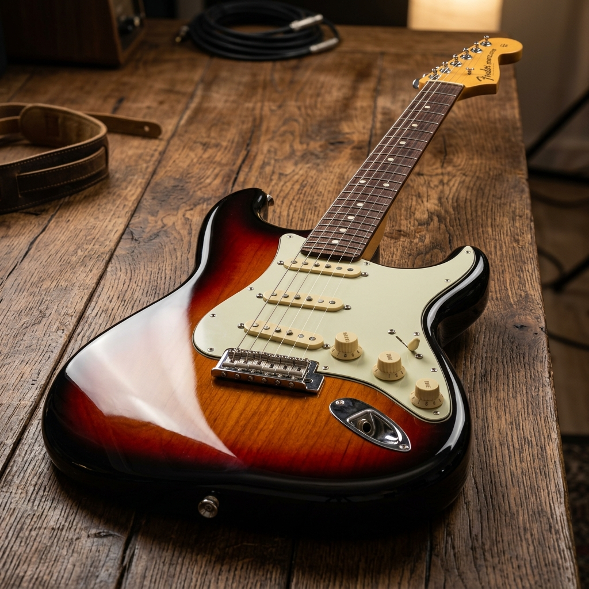
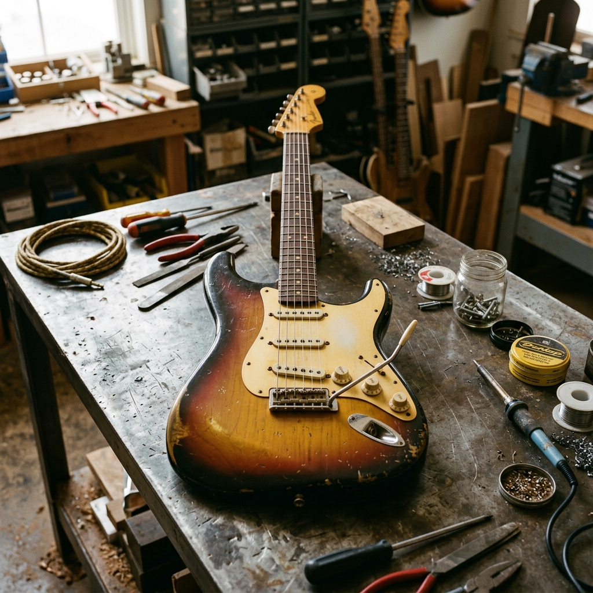
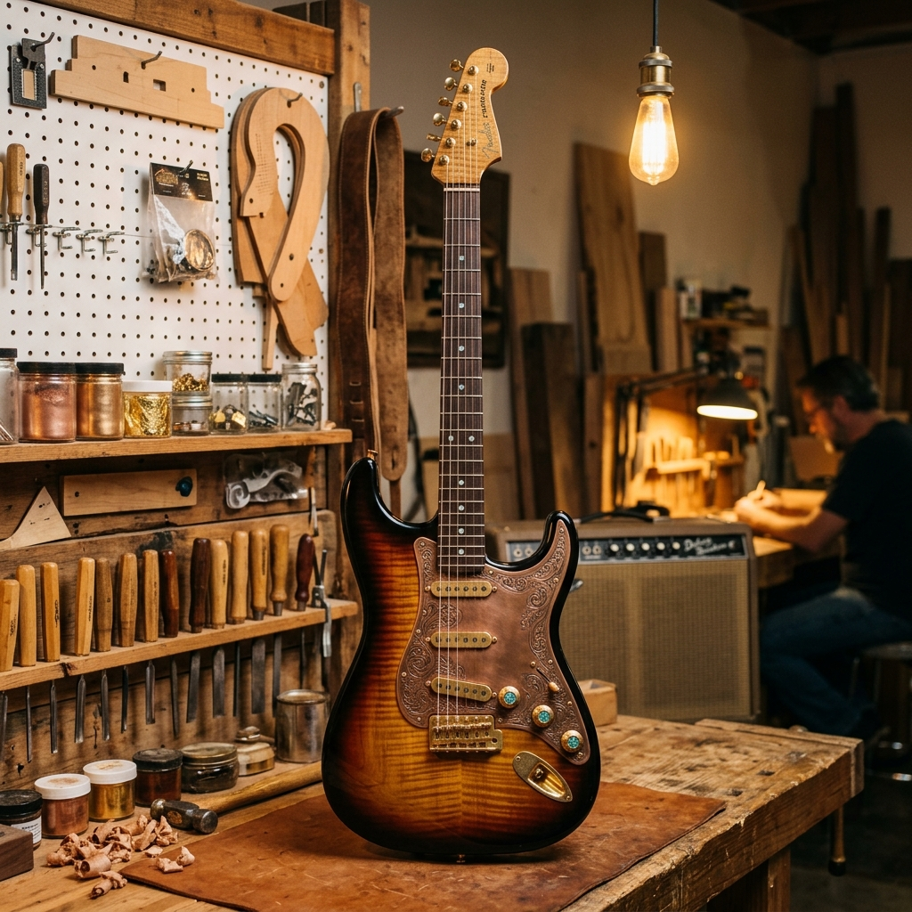
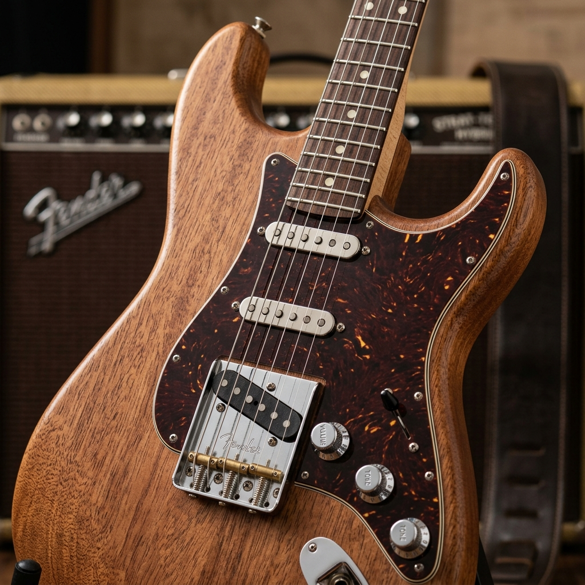

ยินดีต้อนรับสู่โลกของ Fender LXR
นวัตกรรมและความคลาสสิก
Fender LXR ถูกออกแบบมาเพื่อให้ผู้เล่นได้สัมผัสความรู้สึกคลาสสิกพร้อมฟังก์ชันการใช้งานที่ทันสมัย ระบบเสียงปิ๊คอัพที่ได้รับการอัปเดต และคอที่เข้ารูปช่วยให้เล่นง่ายขึ้นในทุกช่วงเฟรต
สร้างสรรค์เสียงในแบบของคุณ
ไม่ว่าจะเป็นแนวเพลง Blues, Rock, Jazz หรือ Metal กีตาร์ตัวนี้รองรับความต้องการที่หลากหลาย ด้วยสวิตช์ปรับแต่งเสียงที่แม่นยำและการตอบสนองต่อไดนามิกที่ยอดเยี่ยม

ICONIC FENDERFender Stratocaster Sunburst Finish
บอดี้ของมันถูกเกลาขึ้นมาจากไม้กระดานแผ่นสุดท้ายของโรงงานเฟอร์นิเจอร์ร้างตัวไม้ผ่านการซึมซับความร้อนและคราบน้ำมันเครื่องมานานหลายทศวรรษช่างทำกีตาร์ลึกลับจึงนำมาขัดเงาและเคลือบผิวเพื่อปลุกวิญญาณของความคลาสสิกให้ออกมาโลดแล่นอีกครั้ง

Fender Strat-Tele Hybrid
กีตาร์คลาสสิกสองรุ่นโดยนำโครงสร้างบอดี้ที่เล่นง่ายและโค้งมนของStratocasterเกิดเป็นงานดีไซน์ทางเลือกใหม่ที่ดึงเสน่ห์ของยุคทองแห่งดนตรีร็อกออกมาได้อย่างน่าสนใจ

ICONIC FENDER MODELFender Stratocaster
ภาพนี้สื่อถึงการประกอบตัวกีตาร์ด้วยเทคนิคขั้นสูงและการเลือกใช้องค์ประกอบที่มีเอกลักษณ์เฉพาะตัวซึ่งสะท้อนถึงมรดกและศิลปะการสร้างสรรค์เครื่องดนตรีในท้องถิ่น
พร้อมที่จะสร้างตำนานของคุณเองหรือยัง?
เลือกรับชมรุ่นที่เราแนะนำ หรือศึกษาประวัติอันงดงามของ Fender LXR ได้เลย
ประวัติ FenderLxr

Masterpiece Fender Sarason Stratocaster
เบื้องหลังเสียงอันทรงพลังและรูปลักษณ์ที่ไร้ที่ติคือการยกย่อง"งานฝีมืออันยอดเยี่ยมของช่างท้องถิ่นสระบุรี(Exceptional Saraburi Craftsmanship) โดยกีตาร์ตัวนี้ถูกประกอบขึ้นด้วยเทคนิคเฉพาะตัวทุกการขันน็อตการเดินระบบวงจรปิ๊คอัพSingle-coil 3 ตัวและการจูนสายสลักอยู่บนแผ่นป้ายทองเหลืองสลักลายแบรนด์ Fenderขนาดย่อมที่ถูกหมุดตรึงไว้ข้างๆเพื่อเป็นเครื่องยืนยันว่านี่คือบล็อกมรดกทางศิลปะและการสร้างสรรค์เครื่องดนตรีชิ้นเอก


Fender Stratocaster Sunburst Finish
Fender Strat-Tele Hybrid
Fender Stratocaster
แนะนำรุ่น FenderLxr
Fender Stratocaster Sunburst Finish
Fender Strat-Tele Hybrid
Fender Stratocaster
Fender Stratocaster Sunburst Finish
Fender Stratocaster Sunburst Finish
บอดี้ของมันถูกเกลาขึ้นมาจากไม้กระดานแผ่นสุดท้ายของโรงงานเฟอร์นิเจอร์สร้างตัวไม้ผ่านการซึมซับความร้อนและคราบน้ำมันเครื่องมานานหลายทศวรรษช่างทำกีตาร์ลึกลับจึงนำมาขัดเงาและเคลือบผิวเพื่อปลุกวิญญาณของความคลาสสิกให้ออกมาโลดแล่นอีกครั้ง
Fender Strat-Tele Hybrid
กีตาร์คลาสสิกสองรุ่นโยนนำโครงสร้างบอดี้ที่เล่นง่ายและโค้งมนของ Stratocaster เกิดเป็นงานดีไซน์ทางเลือกใหม่ที่ดึงเสน่ห์ของยุคทองแห่งดนตรีร็อกออกมาได้อย่างน่าสนใจ
Fender Stratocaster
ภาพนี้สื่อถึงการประกอบตัวกีตาร์ด้วยเทคนิคขั้นสูงและการเลือกใช้องค์ประกอบที่มีเอกลักษณ์เฉพาะตัว ซึ่งสะท้อนถึงมรดกและศิลปะการสร้างสรรค์เครื่องดนตรีในท้องถิ่น
เปรียบเทียบรุ่น FenderLxr
Fender Stratocaster Sunburst Finish
ตัวนี้คือความหรูหราแบบดั้งเดิมที่ทรงคุณค่า บอดี้ทำจากไม้ Alder คัดลายไม้เป็นพิเศษ เพื่อให้ลวดลายธรรมชาติของเนื้อไม้ทำหน้าที่เป็นพระเอกหลักเมื่อมองผ่านสีเคลือบแบบ Gloss Finish (เคลือบเงาไฮกลอส) ส่วนที่โดดเด่นและเป็นเอกลักษณ์ที่สุดคือการพ่นสีไล่เฉดแบบ Sunburst ซึ่งในภาพนี้คือการไล่เฉดแบบ 3-Tone Sunburst ที่ขอบนอกสุดจะเป็นสีน้ำตาลช็อกโกแลตเข้มจนเกือบดำ ทอดเงาโอบล้อมตัวกีตาร์อย่างมีมิติ ก่อนจะค่อยๆ ส่งผ่านเนื้อสีไปยังสีน้ำตาลอิฐอบอุ่น และเม็ดสว่างอย่างงดงามตรงใจกลางตัวบอดี้ด้วยสีส้มอมน้ำตาลประกายทอง ความพิเศษที่ทำให้ Stratocaster Sunburst ตัวนี้แตกต่างจากรุ่นทั่วไปในท้องตลาด คือการเลือกใช้ ปิ๊กการ์ดสีดำสนิท (Black Pickguard) รวมถึงปุ่มควบคุม (Knobs) และหัวครอบปิ๊กอัพสีดำทั้งหมด ซึ่งเป็นการฉีกกรอบความจำจากปิ๊กการ์ดสีขาวดั้งเดิม ทำให้ภาพรวมของกีตาร์มีความลึกลับ ดุดัน ดิบเท่ แต่ยังอัดแน่นไปด้วยความพรีเมียม ตัดกับชุดฮาร์ดแวร์โครเมียมเงินแวววาวรอบตัว
Fender Strat-Tele Hybrid
นี่คือ "ยมทูตชั้นเอก" แห่งวงการดีไซน์ที่หลายทุกกฎเกณฑ์เดิมๆ ของ Fender โดยการนำเอาความงามจากสองมิติที่แตกต่างมารวมร่างกันได้อย่างน่าอัศจรรย์ ตัวบอดี้ใช้โครงสร้างความโค้งมนและส่วนเว้าคู่ (Double Cutaway) ของทรง Stratocaster แต่เปลี่ยนวิธีการทำสีเป็น Matte/Satin Finish (สีน้ำตาลช็อกโกแลตผิวด้าน) ซึ่งไม่มีแสงสะท้อน ผิวสัมผัสมีความเรียบเนียน โมเดิร์น และดูร่วมสมัยแบบมินิมอล แต่จุดที่ทำให้ทุกคนต้องเหลียวมองคือส่วนหัวกีตาร์ (Headstock) ที่ถูกตัดสลับไปใช้รูปทรงเรียวเล็กและตัดตรงอันเป็นสัญลักษณ์ของ Fender Telecaster พร้อมใส่ใบแบรนด์สีทองหรูหรา ยิ่งไปกว่านั้น แผงหน้าปัดของมันยังถูกประดับด้วย ปิ๊กการ์ดลายกระดองเต่าสีน้ำตาลส้ม (Brown Tortoiseshell) ผิวสัมผัสแบบแมตต์หลายชั้น ลวดลายสีส้มสว่างที่ตัดสลับในเนื้อกระดองเต่าทำหน้าที่เพิ่มกลิ่นอายความวินเทจขั้นสูง ทำให้กีตาร์ตัวนี้ดูเป็นงานศิลปะที่มีทั้งความโมเดิร์นและความโบราณผสมผสานกันอย่างลงตัว
Fender Stratocaster
นี่คือ "แม่พิมพ์และรากฐานของประวัติศาสตร์ดนตรีโลก" ที่แท้จริง ดีไซน์ของโมเดลมาตรฐานนี้คือสิ่งที่ถูกจดจำในฐานะภาพจำของกีตาร์ไฟฟ้าทั่วโลกมานานกว่า 70 ปี โดดเด่นด้วยการออกแบบตามหลักสรีรศาสตร์ (Ergonomics) ที่อัจฉริยะด้วยบอดี้ทรงโค้งเว้าคู่ที่สมส่วน พร้อมการปาดขอบและเว้าโค้งที่บอดี้ด้านหลัง (Contoured Body) เพื่อให้ตัวกีตาร์สามารถแนบสนิทไปกับแผ่นอกและสีข้างของผู้เล่นได้อย่างนุ่มนวลและเป็นธรรมชาติที่สุด ส่วนหัวกีตาร์เป็นทรง Stratocaster ดั้งเดิมที่มีความโค้งมนและขนาดที่สมดุลกับบอดี้ การจัดวางแผงควบคุมและปิ๊กการ์ดเป็นไปตามมาตรฐานโรงงานที่เน้นความสมดุล เข้าถึงง่าย และใช้งานได้จริงในทุกสถานการณ์ ไม่มีส่วนเกินที่เกินจำเป็น
Fender Stratocaster Sunburst Finish
ตัวนี้คือความหรูหราแบบดั้งเดิมที่ทรงคุณค่า บอดี้ทำจากไม้ Alder คัดลายไม้เป็นพิเศษ เพื่อให้ลวดลายธรรมชาติของเนื้อไม้ทำหน้าที่เป็นพระเอกหลักเมื่อมองผ่านสีเคลือบแบบ Gloss Finish (เคลือบเงาไฮกลอส) ส่วนที่โดดเด่นและเป็นเอกลักษณ์ที่สุดคือการพ่นสีไล่เฉดแบบ Sunburst ซึ่งในภาพนี้คือการไล่เฉดแบบ 3-Tone Sunburst ที่ขอบนอกสุดจะเป็นสีน้ำตาลช็อกโกแลตเข้มจนเกือบดำ ทอดเงาโอบล้อมตัวกีตาร์อย่างมีมิติ ก่อนจะค่อยๆ ส่งผ่านเนื้อสีไปยังสีน้ำตาลอิฐอบอุ่น และเม็ดสว่างอย่างงดงามตรงใจกลางตัวบอดี้ด้วยสีส้มอมน้ำตาลประกายทอง ความพิเศษที่ทำให้ Stratocaster Sunburst ตัวนี้แตกต่างจากรุ่นทั่วไปในท้องตลาด คือการเลือกใช้ ปิ๊กการ์ดสีดำสนิท (Black Pickguard) รวมถึงปุ่มควบคุม (Knobs) และหัวครอบปิ๊กอัพสีดำทั้งหมด ซึ่งเป็นการฉีกกรอบความจำจากปิ๊กการ์ดสีขาวดั้งเดิม ทำให้ภาพรวมของกีตาร์มีความลึกลับ ดุดัน ดิบเท่ แต่ยังอัดแน่นไปด้วยความพรีเมียม ตัดกับชุดฮาร์ดแวร์โครเมียมเงินแวววาวรอบตัว